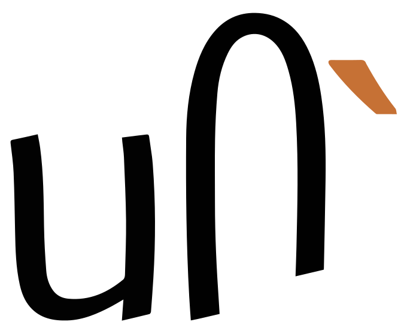

This page brings together basic information about the Tai Le script and its use for the Tai Nüa language. It aims to provide a brief, descriptive summary of the modern, printed orthography and typographic features, and to advise how to write Tai Nüa using Unicode.
The two paragraphs show the same text, except that the first uses spacing characters for tone marks, and second shows the older combining-character orthography.
Select part of this sample text to show a list of characters, with links to more details. Source
Change size: 28px
The Tai Le script, or Dehong Dai script, is used to write the Tai Nüa language of south-central Yunnan, China. (The language is also known as Tai Nüa, Dehong Dai, Tai Mau, Tai Kong, and Chinese Shan.)
The script is currently widely used in China for government documents, public notice boards and signage, in advertising, education and publishing. There are 6 publishing houses in China which publish over 45,000 book copies per year in the script. It is estimated that speakers of Tai Le in Dehong are about 95% literate in the Tai Le script.s
ᥖᥭᥰᥘᥫᥴ
Several orthographic conventions have been used over the 700-800 years of the script's use. Between 1952 and 1988, the script went through four reforms. The reform of 1954 rationalised the old system, to reduce the redundancy of symbols to represent sounds, to represent tones more accurately, and to standardise the handwritten cursive forms. That of 1963/4 standardised combining marks used to represent tones. The reform of 1988 replaced the tone diacritics with today's spacing characters.
The Tai Le script is an abugida, ie. consonants carry an inherent vowel sound that is overridden using vowel signs. In Tai Le, consonants carry an inherent vowel a. See the table to the right for a brief overview of features for the modern Tai Nüa orthography.
The key distinguishing feature of Tai Le is its regularity and simplicity compared to other Tai scripts. The sequence of characters is C(V)(C)(T). Tones always go after any other characters in the syllable.
Tai Le's 19 consonants are straightforward. There is no duplication for tone support, no stacking or other conjunct behaviour, etc.
Syllable-final consonant sounds use ordinary code points without an inherent vowel. Parsing syllables is usually straightforward because each syllable-final consonant is folllowed by a tone mark.
Other post-consonant vowels are written using 11 dedicated vowel letters, including a j glide, and one consonant for the w glide. All vowel signs are ordinary spacing characters (no combining marks), and are stored and displayed after the base character.
Tai Nüa has the following 6 tones in unchecked syllables.
Description
Representation
mid-rise
˨˦
35
¹
high-level
˥
55
²
low-level
˩
11
³
mid-fall
˦˨
42
⁴
high-fall
˥˧
54
⁵
mid-level
˧
33
–
Checked syllables are limited to the following 3 tones.
Description
Representation
mid-rise
˨˦
35
¹
low-level
˩
11
³
high-fall
˥˧
54
⁵
Structure
The script is syllable-based.
A syllable's phonetic and orthographic structure is very simple; C(V)(C)(T).
There are no medial consonant letters. Single characters are available for the onset sequences.
Syllable-final consonants are the same characters used for onset.
There are 6 tone marks, which may be represented by spacing characters or in older orthographies by combining marks, but which always come at the end of the syllable..
Vowels
This orthography has no special features with respect to the following.
a following a consonant is not written, but is seen as an inherent part of the consonant letter, so ka is written by simply using the consonant letter.
Vowel letters
Dedicated vowel letters
ᥐᥤ
ki[U+1950 TAI LE LETTER KA + U+1964 TAI LE LETTER I]
Non-inherent vowel sounds that follow a consonant are represented using ordinary spacing letters, rather than combining marks, and they all appear after the base.
ᥤ␣ᥪ␣ᥧ␣ᥥ␣ᥨ␣ᥫ␣ᥦ␣ᥩ␣ᥣ␣ ␣ᥬ␣ᥭ
Consonant used as a glide
ᥝ is used as a w glide in diphthongs.
ᥟᥝ
Standalone vowels
tbd
Vowel length
tbd
Nasalisation
tbd
Tones
The current orthography for Tai Le uses spacing characters to represent tone marks.
ᥴ␣ᥰ␣ᥱ␣ᥲ␣ᥳ
Tone marks were introduced in 1963, and until 1988 were written using the following combining characters.
́␣̈␣̌␣̀␣̇
Whether spacing character or combining characters are used, Tai Le tone marks always appear at the very end of a syllable (ie. after any final consonant).
The table of tones shown earlier is extended here to show how tones are written in the current (spacing character) and old (combining mark) orthographies.
Description
Representation
Old
Current
mid-rise
˨˦
35
¹
́
ᥴ
high-level
˥
55
²
̈
ᥰ
low-level
˩
11
³
̌
ᥱ
mid-fall
˦˨
42
⁴
̀
ᥲ
high-fall
˥˧
54
⁵
̇
ᥳ
mid-level
˧
33
–
–
–
The mid-level tone is unmarked.
When a diacritic is used with a tall vowel letter it is displayed to the side (see context).
Consonants with no following vowel
tbd
Vowel sounds mapped to characters
This section maps Tai Nüa vowel sounds to common graphemes in the Tai Le orthography Click on a grapheme to find other mentions on this page (links appear at the bottom of the page). Click on the character name to see examples and for detailed descriptions of the character(s) shown.
Sounds listed as 'infrequent' are allophones, or sounds used for foreign words, etc.
Tai Nüa has no syllable-initial clusters. Check this.
Finals
Consonants do appear in syllable-final position, but Tai Le has no dedicated characters for this. Standard consonant characters are used. It is usually easy to tell that a character is used in final consonant position, because of the position of tone marks, however it seems possible that an open syllable with no tone mark followed by an open syllable using the inherent vowel would create some ambiguity.
This section maps Tai Nüa consonant vowel sounds to common graphemes in the Tai Le orthography,. Click on a grapheme to find other mentions on this page (links appear at the bottom of the page). Click on the character name to see examples and for detailed descriptions of the character(s) shown.
Sounds listed as 'infrequent' are allophones, or sounds used for foreign words, etc.
In China, European digits are used, in the main, although Myanmar digits (U+1040..U+1049) are also used with slight glyph variants.
These are the Myanmar digits. Unfortunately, the default font for this page doesn't show the typical differences in glyph shape, in particular, for the digits 2, 6, 8, and 9. u
The following features are not found in this orthography.
Cursive joining (ie. joined up like Arabic).
Case distinction, or special transforms to convert between characters.
This section brings together information about the following topics:
font/writing styles;
cursive text;
context-based shaping;
context-based positioning;
letterform slopes, weights, & italics;
case & other character transforms.
Vowels all follow the initial consonant and are spacing characters with no special joining behaviour. Therefore, the Tai Le script has no need for special shaping, other than that when a tone diacritic is used with a tall vowel letter it is displayed to the side.

Examples of contextual placement of tone marks.
Letterform slopes, weights, & italics
tbd
Graphemes
Grapheme clusters
tbd
Punctuation & inline features
Word boundaries
Words are not separated by spaces.
Phrase & section boundaries
，␣、␣；␣：␣．␣。␣？␣！
Tai Le uses western and fullwidth Chinese punctuationu650, which may include the following (needs to be checked).
As in almost all writing systems, certain punctuation characters should not appear at the end or the start of a line. The Unicode line-break properties help applications decide whether a character should appear at the start or end of a line.
The following list gives examples of typical behaviours for some of the characters used in modern Tai Nüa. Context may affect the behaviour of some of these and other characters.
Click/tap on the characters to show what they are.
〈 《 （ should not be the last character on a line.
〉 》 ） 。 、 ， ． ： ； ！ ？ should not begin a new line.
Text alignment & justification
tbd
Text spacing
tbd
Baselines, line height, etc.
Tai Nüa uses the so-called 'alphabetic' baseline, which is the same as for Latin and many other scripts.
Tai Nüa places tone marks above base characters, but they are placed to the side of tall character glyphs.
To give an approximate idea, fig_baselines compares Latin and Tai Nüa glyphs from a Noto font. The basic height of Tai Nüa letters is typically just over the Latin x-height, however tall glyphs reach a little beyond the Latin ascenders, creating a need for slightly larger line spacing.
Font metrics for Latin text compared with Tai Nüa glyphs in the Noto Sans Tai Le font.
Counters, lists, etc.
tbd
Styling initials
tbd
Page & book layout
This section is for any features that are specific to Tai Le and that relate to the following topics:
general page layout & progression;
grids & tables;
notes, footnotes, etc;
forms & user interaction;
page numbering, running headers, etc.
{kind=link}